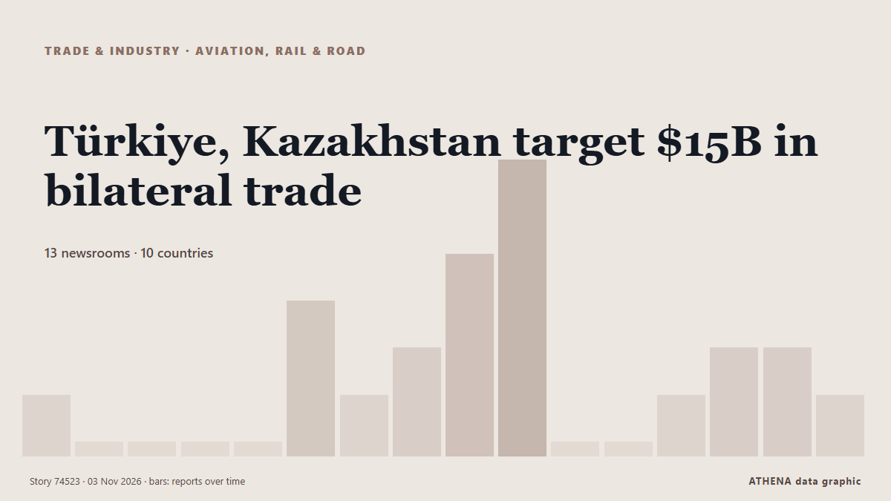

Türkiye, Kazakhstan target $15B in bilateral trade

Indonesia and Kazakhstan are preparing to strengthen bilateral cooperation through more than 20 agreements ahead of ... من Antara (English)
نشرته بشكل مستقل 13 مصدرًا في 10 دول منذ 26 أكتوبر، وأول من نشره Eurasianet؛ والتغطية في ذروتها. يقدّر ATHENA الخطر بأنه منخفض (1.9/10)، ويعود ذلك أساسًا إلى خطورة الضرر الموصوف ونطاقه الجغرافي والقطاعي. الثقة 85٪ (مرتفعة)، وعدد المصادر المستقلة المؤكِّدة: 13، بمتوسط موثوقية للمصادر يبلغ 74٪. وسائل الإعلام حسب البلد: كازاخستان (12), تركيا (2), إندونيسيا (1). التغطية: من 26 أكتوبر إلى 3 نوفمبر، 192 ساعة.
لماذا يهم: ينتقل الاضطراب في التجارة أو الصناعة أو البنية التحتية عبر سلاسل الإمداد فيغيّر التكاليف ومواعيد التسليم في أماكن بعيدة.
ما الذي تغيّر: 5 تقارير جديدة من 3 غرف أخبار خلال 24 ساعة حتى 3 نوفمبر.
العنوان الأول: School Bullying in Kazakhstan: Prosecutors Propose New Deputies to Protect Students from Violence
تُعرض العناوين بالإنجليزية كما نُشرت.
نظرة سريعة
اختير وقُيِّم وكُتب وفق منهجية ATHENA المنشورة. لا يتدخل أي محرر في الأحداث بعينها. كيف يُنتَج ›
| 26 Oct 12:00 UTC | 1 |
|---|---|
| 27 Oct 00:00 UTC | 0 |
| 27 Oct 12:00 UTC | 0 |
| 28 Oct 00:00 UTC | 0 |
| 28 Oct 12:00 UTC | 0 |
| 29 Oct 00:00 UTC | 3 |
| 29 Oct 12:00 UTC | 1 |
| 30 Oct 00:00 UTC | 2 |
| 30 Oct 12:00 UTC | 4 |
| 31 Oct 00:00 UTC | 6 |
| 31 Oct 12:00 UTC | 0 |
| 01 Nov 00:00 UTC | 0 |
| 01 Nov 12:00 UTC | 1 |
| 02 Nov 00:00 UTC | 2 |
| 02 Nov 12:00 UTC | 2 |
| 03 Nov 00:00 UTC | 3 |
| 31 Oct 07:25 UTC | 0.0 |
|---|---|
| 31 Oct 07:57 UTC | 1.8 |
| 03 Nov 11:39 UTC | 1.9 |
لماذا هذه الأرقام
الأهمية
الخطر
الثقة
التغطية — من نشر الخبر ومتى
العنوان كما نُشر · يفتح الأصل- Eurasianet · INTNvidia chief taps Astana as AI hub
- Antara (English) · إندونيسياIndonesia, Kazakhstan seek to expand trade ahead of Prabowo's visit
- The Astana Times · كازاخستانKazakhstan Leads Central Asia in Wages but Records Decline in Purchasing Power
- The Times of Central Asia · CASSchool Bullying in Kazakhstan: Prosecutors Propose New Deputies to Protect Students from Violence
- The Astana Times · كازاخستانKazakhstan’s GDP Is Growing, but Is Its Economy Transforming?
- The Astana Times · كازاخستانAir Astana Launches First Flight With High-Speed Satellite Internet in Kazakhstan
- The Astana Times · كازاخستانKazakhstan Attracts 93% of EAEU Greenfield Investment Value in 2025, UNCTAD Says
- The Astana Times · كازاخستانKazakhstan to Begin Electronic Entry Checks Nov. 1, Make QazETA Mandatory in 2027
- The Astana Times · كازاخستانHalyk Bank to Tap Global Startup Network to Develop AI Solutions
- The Diplomat · اليابانWhat Tokayev’s Economic Agenda Means for Kazakhstan’s International Partnerships
- Arab Times · الكويتKazakhstan and Kuwait Agree to Expand Trade, Investment and Food Security Cooperation
- BIS central bankers' speeches · سويسراRepublican budget for 2027–2029
- The Astana Times · كازاخستانKazakhstan’s Aviation Industry Gains as FlyArystan Joins IATA
- The Astana Times · كازاخستانOne Number Could Save Life: Why Kazakhstan Needs Unified Emergency Hotline
- The Astana Times · كازاخستانKazakhstan Establishes Diplomatic Relations With All UN Member States
- IRNA (English) · إيرانIran, Kazakhstan ink trade MoU
- AzerNews · أذربيجانAzerbaijan, Kazakhstan seek to expand cooperation in logistics and AI
- DW English · ألمانياEthnic Germans in Kazakhstan face legacy of the Soviet Union
- Türkiye Today · تركياTürkiye, Kazakhstan target $15B in bilateral trade
- TRT World · تركياTürkiye expands economic footprint in Kazakhstan with major Almaty Airport investment
- RUSI · المملكة المتحدةWhy Kazakhstan Joined Both the American and Chinese AI Initiatives
- The Astana Times · كازاخستانKazakhstan’s Trade With CAREC Countries Rises 14.4% to $8.8 Billion in 2025, Economy Minister Says
- The Astana Times · كازاخستانErdoğan Sends Warm Message to Tokayev While Flying Over Kazakhstan
- The Astana Times · كازاخستانKazakhstan’s Construction Program Seeks to Boost Growth and Improve Living Standards
- The Times of Central Asia · CASKazakhstan and China Discuss $200 Million Fund for Middle Corridor